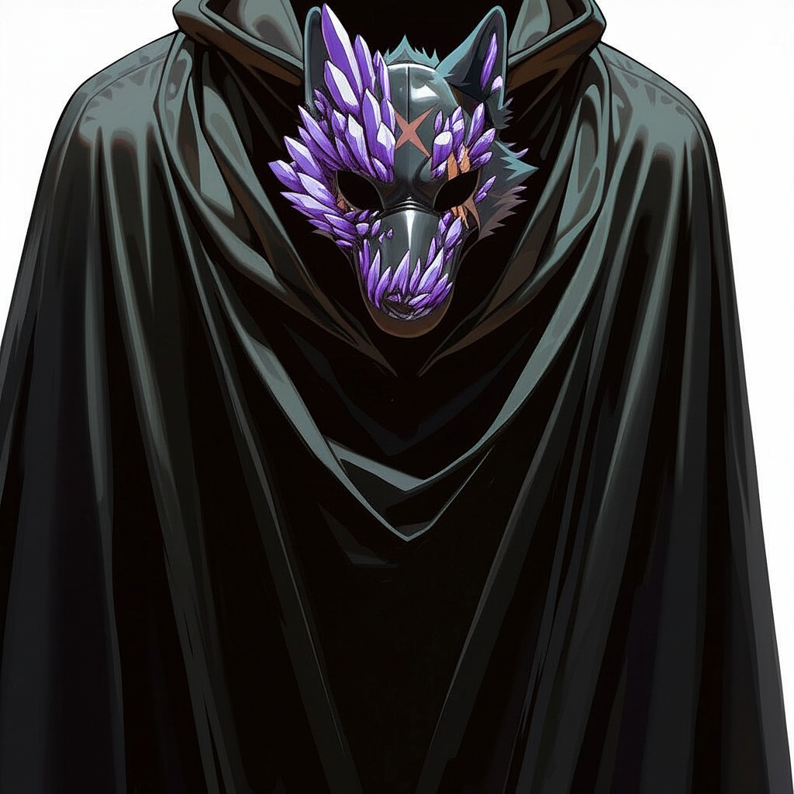

Основные Антагонисты Кампании
Отец, он же Тадмавриэль
Информация известная всем

До смерти жены Отец был мудрым и почитаемым ученым. Однажды в Эшхолд пришла хворь и унесла любовь всей его жизни, Жену Тадмавриэля Тейрасу. После Отец закрылся в себе. Через некоторое время он принес в Архей спарки и скинт и основал церковь Очищения вместе с Епископом Лукием...
Первое впечатление:???
Информация которую вы узнали:???
Эпископ Лукий
Информация известная всем

Uh, yeah! Mass...produce lifestyle with no easy way out of this hell Freedom goes fast, enjoy it while you got it before your time's up and you reach the last minute Merci, au revoir Pride shades the truth deep within you, create yourself a new view If tired of comin' up short, sleep until the whistle, Halftime! Climax, daydreaming, All in! Lines of lust and love are blurred This burning feeling explodes Will your true feelings show? I kept walking on the wild side I don't wanna fall asleep throughout my life Sometimes in a Clyde Barrow style Sometimes like a James Bond mind Can't sensor me if I keep singing, keep rapping, keep telling the truth like Malcom X My fate is worth it if it’s after this To all the Gods I ask: what is after death？ Turmoil in my heart, it has to end Following your mind, with that wisdom you'll ascend
Первое впечатление:???
Информация которую вы узнали:???
Главный Инквизитор Морс
Информация известная всем
Driving in my truck right after a beer Hey, that bump is shaped like a deer DUI? How about you die? I'll go a hundred miles An hour! Little do you know, I filled up on gas Imma get your fountain-making ass Pulverize this fuck With my Bergentrück It seems you're out of luck! TRUCK! Beer is on the seat Blood is on the grass Won't admit defeat With cops right up my ass You may have a fleet But still I'm driving fast I'll never be passedнес в Архей спарки и скинт и основал церковь Очищения вместе с Епископом Лукием...
Первое впечатление:???
Информация которую вы узнали:???
Пантеон Дистортума
Галадайн
Божество справедливости и знаний.
Его символизирует Щит с изображением весов.
Законно-нейтральный.
Является покровителем большинства паладинов.
Ниира
Божество силы и тайн.
Её символизирует кинжал, обмотанный бинтом.
Законно-злая.
Когда плут задумывается о возвышении, первым делом к нему является богиня Ниира, предлагающая своё покровительство.
Генделлерекан
Первое божество чистой магии.
Его символизирует перевёрнутый треугольник.
Законно-добрый.
Его сила питает основную часть волшебников. Он покровительствует некоторым драконам, стремящимся к истинным, нетронутым знаниям, которые они не применят во вред. Когда рождается чародей, первым делом его одаривает взгляд Генделлерекана, который может являться во снах в разных образах.
Такхизия
Второе божество чистой магии. В некоторых обществах считается богиней крови, оккультных знаний.
Её символизирует перечеркнутая шестиконечная звезда.
Хаотично-злая.
Её сила питает всех, кто окунулся в тёмные искусства. Она обожает хаос, её забавляют практически все злые и корыстные поступки. Часто она принимает жертвы, в ответ на которые может даровать своё покровительство. Одна из частых посетительниц жаждущих силы колдунов. Однако, она понимает всю сложность и важность магии, поэтому крепко сотрудничает с Генделлереканом, хоть их взгляды и отличаются.
Зимургил
Божество человечности, баланса.
Его символизирует Человеческая голова без волос и с закрытыми глазами.
Хаотично-добрый.
“Можешь помочь - помоги. Поступай бескорыстно, благочестиво." Многие считают его истинным божеством, первородцем жизни и понятия души. Пристально смотрит за каждым поступком. В не очень популярных учениях отмечается, что он создатель конкретно человечества. Он редко вмешивается в мир, даруя право выбора для душ существ. Однако отмечаются несколько случаев его покровительства: великие герои, которые однажды спасли мир от гибели.
Иррит
Божество алчности, гнева, свободы.
Её символизирует клинок, окутанный огнём.
Нейтрально-злая.
Покровительствует большинству воинов, варваров. Обычно, она влияет на решения в выборе из двух зол.
Течение магии
Зоны богатой магии
В этих зонах Плетение сохранилось в прежнем виде. Заклинатели имеют шанс не потратить ячейку при использовании заклинании. Совершите спасбросок заклинательной характеристика Сл 16 + уровень заклинания. При успехе - оно не расходует ячейку.
Зоны нормального течения
Хоть бедствие и повредило течение магии, заклинатели всё ещё полагаются на Плетение. В некоторых местах оно пострадало не сильно, что позволяет магам использовать его практически без вреда для себя.
Зоны слабой магии
В этих зонах уже даже хаотичная мелодия Плетения превращается в тончайшие и опаснейшие нити. В таких зонах заклинатели могут лишь единожды в сутки свободно использовать одну ячейку каждого круга. Далее, нити Плетения будут прорезаться в душу волшебника, калеча его изнутри. Это свойство прозвали высасыванием жизни. При использовании ячейки первого уровня или выше для накладывания заклинания, заклинатель получает урон, высчитывающийся по таблице урона. Выпавшее значение также вычитается из следующего лечения, получаемого заклинателем.
При использовании заклинании 8 и 9 круга в зонах слабой и нормальной магии вы гарантированно получаете 2к8+20 урона некротической энергии.
| Круг | Урон |
|---|---|
| 1-2 | 1к4+1 |
| 3-4 | 2к4+2 |
| 5-6 | 2к6+2 |
| 7 | 2к8+4 |
Лечащие заклинания
При восстановлении себе здоровья с помощью заклинания, каст которого наоборот, отбирает у вас хиты, вам необходимо восстановить себе хиты больше чем выпавшее выпавшее значение + ваш удвоенный уровень. В таком случае, вы восстанавливаете хиты в полном размере (т. е. без высасывания жизни). Также, высасывание жизни приостановиться для ячейки этого уровня на 3 раунда. Собственно, если вы восстанавливаете хиты союзнику всё считается обыкновенным образом.